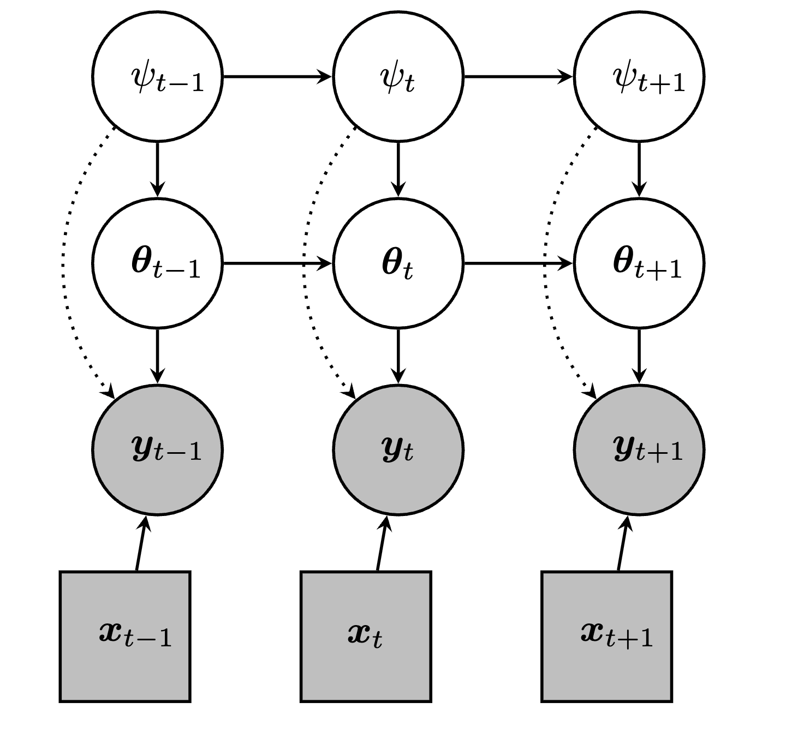
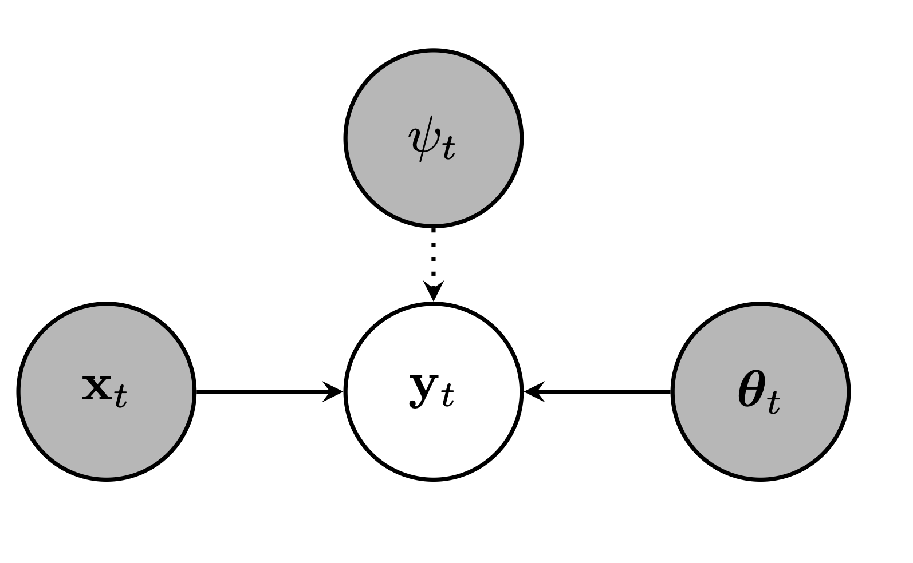
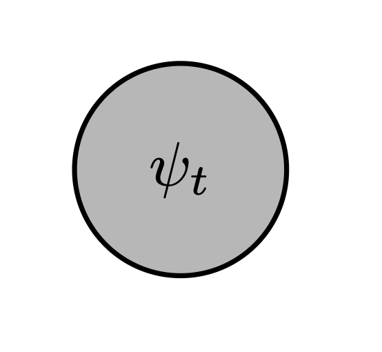
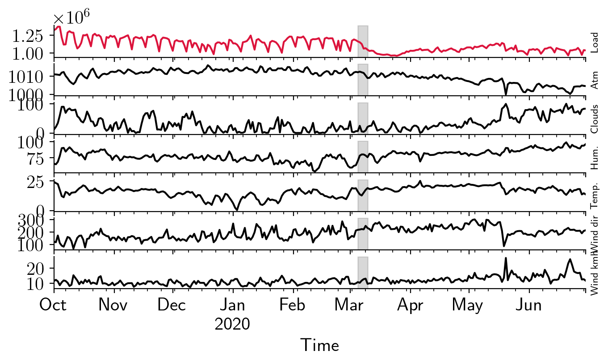

The BONE framework allows the classification and development of new online learning algorithms
in non-stationary environments.
Our framework encompasses methods in
the filtering literature (e.g., Kalman filter),
the segmentation literature (e.g., Bayesian online changepoint detection),
the continual learning literature (e.g., variational continual learning),
the contextual bandit literature (e.g., Bayesian neural bandits), and
the forecasting literature (e.g., Bayesian ensemble models).

State-space model (SSM) induced by BONE.
BONE components
(M.1) A model for observations (conditioned on features \({\bf x}_t\)) — \(h(\theta, {\bf x}_t)\)
(M.2) An auxiliary variable to track regime changes — \(\psi_t\)
(M.3) A model for prior beliefs (conditioned on \(\psi_t\) and data \(\cal D_{1:t}\)) —
\(\pi(\theta; \psi_t, {\cal D}_{1:t-1})\)
(A.1) An algorithm for weighting choices of \(\theta\) —
\(q(\theta; \psi_t, {\cal D}_{1:t})\)
(A.1) An algorithm for weighting choices of \(\psi_t\) —
\(\nu(\psi_t, {\cal D}_{1:t})\)
The expected posterior predictive under BONE is
$$
\begin{aligned}
&\hat{\bf y}_t
= \sum_{\psi_t \in \Psi_t} \nu(\psi_t, {\cal D}_{1:t})\,
\int q(\theta; \psi_t, {\cal D}_{1:t})\,
h(\theta, {\bf x}_t)\,d\theta,\\
&\\
&q(\theta; \psi_t, {\cal D}_{1:t})
\propto \exp(-\ell_t(\theta))\,\pi(\theta; \psi_t, {\cal D}_{1:t-1}).
\end{aligned}
$$
(M.1) Model for observations
Represents the function that maps the features \({\bf x}_t\) to the observations \({\bf y}_t\).
Choice is dependent on the nature of the data and the environment.
Neural networks: For non-linear relationships and complex patterns (e.g., CIFAR-100 dataset).
Time-series models: to model temporal dependencies (e.g., LSTM, ARIMA).

Choice of measurement model \(h(\theta, {\bf x}_t)\) in BONE.
(M.2) Choice of auxiliary variable
Encodes our belief about what a "regime" is.
name
values
cardinality
C
\(\{c\}\)
\(1\)
CPT
\(2^{ \{0, 1, \ldots, t\} }\)
\(2^t\)
CPP
\([0,1]\)
\(\infty\)
CPL
\(\{0,1\}^t\)
\(2^t\)
CPV
\((0,1)^t\)
\(\infty\)
ME
\(\{1, \ldots, K\}\)
\(K\)
RL
\(\{0, 1, \ldots, t\}\)
\(t\)
RLCC
\(\{\{0, t\}, \ldots, \{t, 0\}\}\)
\(2 + t(t+1)/2\)
C is constant,
CPT is changepoint timestep,
CPP is changepoint probability,
CPL is changepoint location,
CPV is changepoint probability vector,
ME is mixture of experts,
RL is runlength,
RLCC is runlength with changepoint count.

Choice of auxiliary variable \(\psi_t\).
(M.3) Model for conditional priors
Modify prior beliefs about the model parameters based on past data and the auxiliary variable.
In the Gaussian case, the conditional prior modifies the mean and covariance
$$
\begin{aligned}
&\pi(\theta_t;\, \psi_t,\, {\cal D}_{1:t-1}) \\
&={\cal N}\big(\theta_t\vert g_{t}(\psi_t, {\cal D}_{1:t-1}), G_{t}(\psi_t, {\cal D}_{1:t-1})\big).
\end{aligned}
$$
We evaluate members of the BONE framework on electricity load forecasting during the Covid-19 pandemic.
Our choice of measurement model h (M.1) is a two-hidden layer multilayered perceptron (MLP) with four units per
layer and a ReLU activation function.
Features are lagged by one hour.

Forecasting under distribution shift:
changes in the output \({\bf y}_t\) (electricity load) are not
reflected in the input \({\bf x}_t\) (weather features).